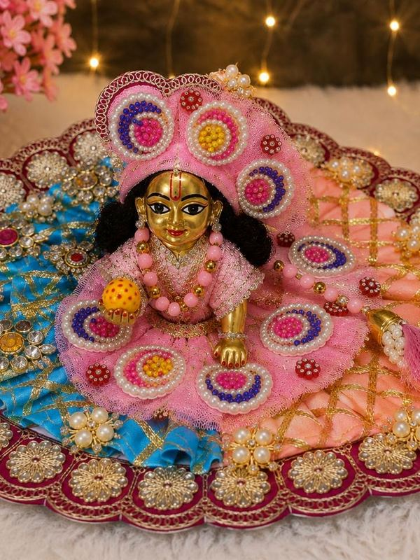
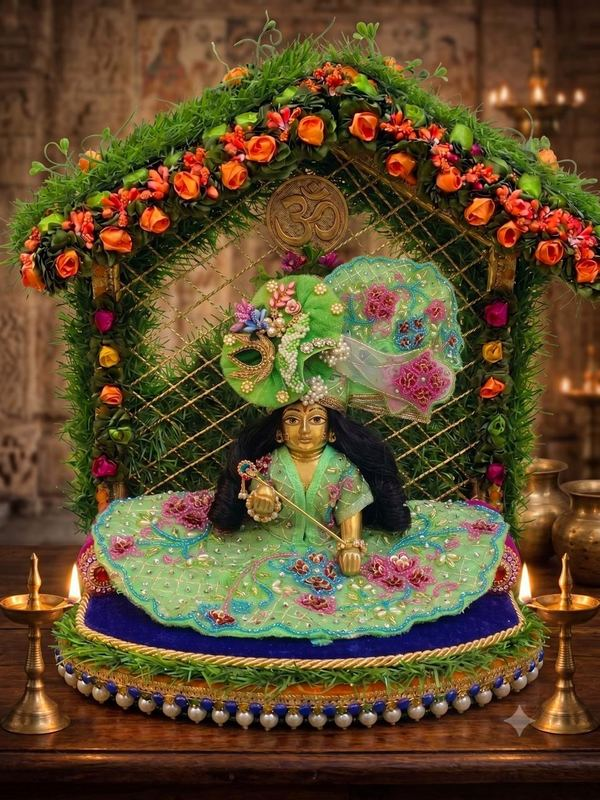
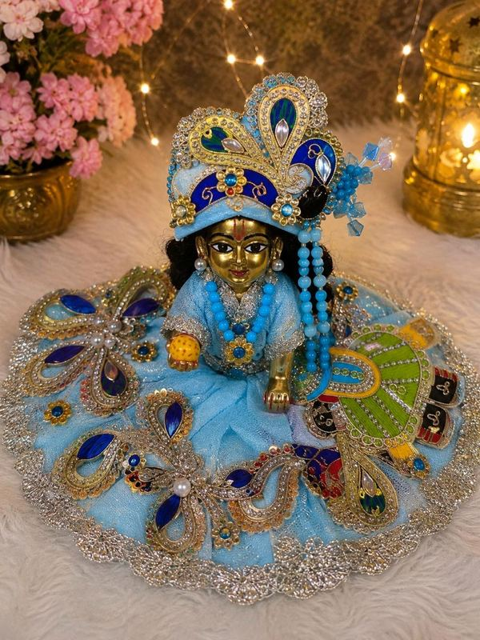
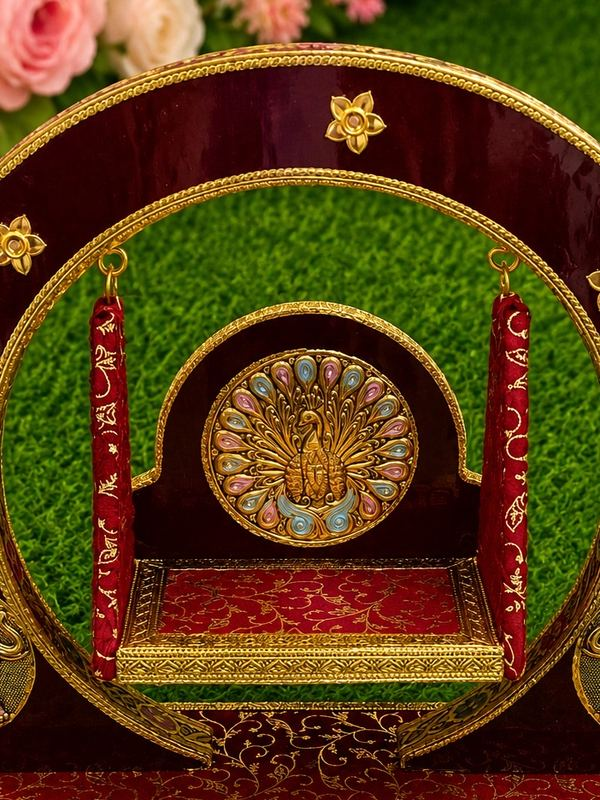
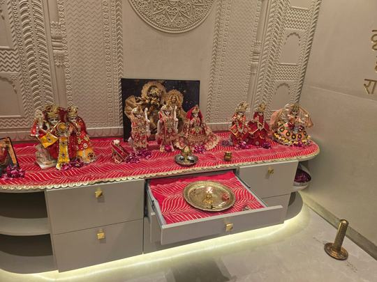
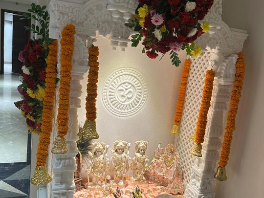
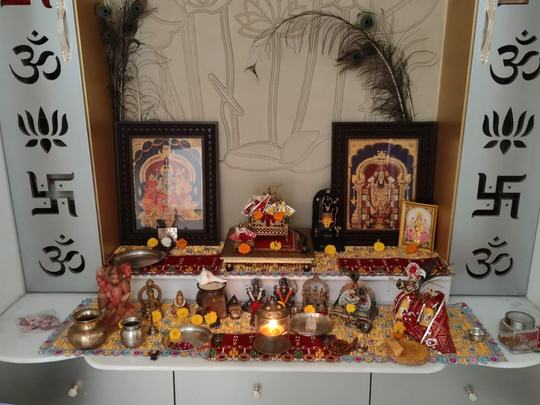
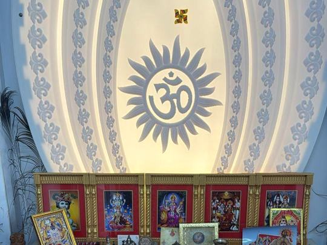

नित्य · प्रतिदिन
रोज़ की पोशाक
सुबह के शृंगार के लिए मुलायम सूती और कॉटन-सिल्क। बार-बार धुलने पर भी रंग वैसा ही रहता है।
₹499 सेवृंदावन में हस्तनिर्मित · दिल्ली NCR में सेवा · पूरी दुनिया में डिलीवरी
देविका वे वस्त्र बनाती है जो परिवार अपने ठाकुर जी को पहनाते हैं — और उन्हें पहनाने के लिए किसी को भेजती भी है। नई पोशाक, स्वच्छ मंदिर, नया शृंगार। पुरानी पोशाक हम आदर के साथ वापस ले जाते हैं।
फ़िलहाल गुरुग्राम, दक्षिण दिल्ली, नोएडा और द्वारका में। बाक़ी शहरों के लिए प्रतीक्षा-सूची में जुड़ें।

संग्रह
हर पोशाक आपकी मूर्ति के नाप पर, मौसम और अवसर के अनुसार चुने गए कपड़े में बनती है। साइज़ 0 से 12 तक, और उससे बड़ी मूर्तियों के लिए नाप पर।

सुबह के शृंगार के लिए मुलायम सूती और कॉटन-सिल्क। बार-बार धुलने पर भी रंग वैसा ही रहता है।
₹499 से
जन्माष्टमी, नवरात्रि, दीपावली और अन्नकूट के लिए बनारसी सिल्क, ज़री बॉर्डर और मौसमी रंग।
₹1,299 से
हाथ की ज़रदोज़ी, असली ज़री, और आपकी मूर्ति के नाप का मुकुट व आभूषण। गिनी हुई कृतियाँ, चार से छह सप्ताह।
₹3,499 से
सिंहासन के गिलाफ़, चँदनी, आसन, ठाकुर जी की शय्या, झूले के परदे और मंदिर के रनर।
₹899 सेमंदिर सेवा
प्रशिक्षित सेवा साथी आपके बताए समय पर आते हैं। पैंतालीस शांत मिनट, और आपका मंदिर वैसा दिखने लगता है जैसा त्योहार की सुबह दिखता है — हर महीने, बिना आपको याद रखे।
तारीख़ और दो घंटे की विंडो चुनिए। जहाँ तक हो सके हर महीने वही सेवा साथी आते हैं, ताकि हर बार कोई अजनबी घर में न आए।
मंदिर की धूल और सफ़ाई, पीतल की पॉलिश, पुराने फूल हटाना, ताज़े फूल और साफ़ आसन।
मौसम के अनुसार नई पोशाक, प्रेस की हुई और तैयार। चाहें तो वस्त्र आप स्वयं पहनाएँ — ज़्यादातर परिवार यही करते हैं, और हम पोशाक आपके हाथ में देते हैं।
पिछले महीने की पोशाक सूती थैली में ले जाई जाती है, आदर के साथ पुनर्चक्रित होती है, और वह किस रूप में ढली — इसकी फ़ोटो आपको भेजी जाती है।
जब तक आप न कहें, मूर्ति को कोई नहीं छूता। सामान्य नियम यही है कि हम पूरी तैयारी करते हैं और पोशाक परिवार के किसी सदस्य के हाथ में देते हैं — सेवा आपकी ही रहती है। आप कहें तो पूरा शृंगार हम कर देते हैं। यह आपका मंदिर है और आपका निर्णय, जो आपकी फ़ाइल में दर्ज रहता है — हर बार समझाना नहीं पड़ता।
हमारे सेवा साथी पुलिस-सत्यापित हैं, सोसाइटी-मान्य पहचान-पत्र रखते हैं, शू-कवर पहनते हैं, मंदिर के पास नंगे पाँव काम करते हैं, और उन्हें सिखाया जाता है कि क्या छूना है और क्या नहीं। विज़िट की विंडो दो घंटे की होती है, और आप घर पर न हों तब भी तैयार मंदिर की फ़ोटो आपको मिलती है।
हमारा काम
दिल्ली NCR के घरों के मंदिर — हर तल के नाप पर कटे रनर, मौसम के अनुसार नई सज्जा, और पूरे त्योहार की व्यवस्था। इनमें से हर मंदिर हमारी अपनी टीम ने नापा, बनाया और लगाया है।








मंदिर को इस स्तर तक लाना शृंगार योजना की साल में दो बार होने वाली पूरी सज्जा में शामिल है। परिवारों की अनुमति से साझा किया गया।
मासिक और त्रैमासिक योजनाएँ
हर योजना में विज़िट, पोशाक, ताज़े फूल और धूप-अगरबत्ती, और पिछली पोशाक की वापसी शामिल है। किसी भी महीने बंद कर सकते हैं। त्रैमासिक एक बार में बिल होती है और लगभग दसवाँ हिस्सा बचाती है।
त्रैमासिक ₹1,899 — तीन विज़िट, एक बार का बिल
नित्य चुनेंत्रैमासिक ₹3,299 — ₹298 की बचत
उत्सव चुनेंत्रैमासिक ₹6,799 — ₹698 की बचत
शृंगार चुनेंविदेश में रहने वाले परिवारों के लिए
पोशाक बॉक्स — हर मौसम की एक पोशाक आपके पते पर, USD 39 या USD 59 प्रति माह, और पुरानी पोशाक वापस भेजने के लिए पहले से डाक-शुल्क चुकाया लिफ़ाफ़ा। माता-पिता के लिए सेवा — भुगतान आप जहाँ हैं वहाँ से करें, विज़िट उनके घर भारत में होती है, और फ़ोटो आपको मिलती हैं। विदेश में रहने वाले हमारे ज़्यादातर ग्राहक यही योजना चुनते हैं।
चक्रीय वचन
लौटाई गई पोशाक धुलकर आसन और चँदनी में ढलती है, मंदिर के दीपकों की बत्ती बनती है, ग्रंथों के आवरण में बदलती है, या विधिपूर्वक अग्नि को समर्पित की जाती है और भस्म आपको लौटाई जाती है। हमारी यह प्रक्रिया उन्हीं पुजारियों द्वारा देखी-परखी गई है जिनके साथ हम काम करते हैं, और हर वस्त्र का फ़ोटो रिकॉर्ड रहता है। कुछ भी दोबारा बेचा नहीं जाता, कतरनों में नहीं कटता, और शरीर पर पहनने की किसी वस्तु में नहीं बदलता।
त्योहार पैकेज
परिवार सबसे ज़्यादा जो माँगते हैं वह बेहतर पोशाक नहीं है — वह है पोशाक का समय पर पहुँचना। त्योहार पैकेज आरक्षित कीजिए और हम विज़िट एक दिन पहले की सुबह रखते हैं, बाद की शाम नहीं।
गहरे नीले और सुनहरे रंग की पोशाक, मुकुट, बाँसुरी, झूले का परदा और रातभर के लिए पूरा मंदिर सज्जा।
₹4,999नौ रंगों की नौ पोशाकें, एक सेट में, रोज़ बदलने की मार्गदर्शिका के साथ। दो विज़िट शामिल।
₹8,999त्योहार की पोशाक, पूरे मंदिर की नई सज्जा, दीयों की व्यवस्था और अन्नकूट का वस्त्र। धनतेरस से बुकिंग।
₹5,999रजाईदार और मख़मली पोशाक, ठाकुर जी की रजाई और गर्म शय्या। गर्मी का सेट वापस ले लिया जाता है।
₹3,499केसरिया और गुलाबी पोशाक, गुलाल-सुरक्षित कपड़ा, और वसंत के महीनों के लिए मंदिर की नई सज्जा।
₹3,999दस दिन की व्यवस्था और रोज़ बदलने वाला पोशाक सेट, स्थापना की सज्जा, और विसर्जन के दिन आदरपूर्वक समेटना।
₹4,499त्योहारों की तिथियाँ क्षेत्र और पंचांग के अनुसार बदलती हैं। आरक्षण के समय हम आपकी विज़िट की सटीक तारीख़ तय कर देते हैं, और वह हमेशा त्योहार से पहले होती है, त्योहार के दिन नहीं।
विज़िट बुक करें
एक पूरी विज़िट — मंदिर की सफ़ाई, एक सूती पोशाक, ताज़े फूल — ताकि योजना लेने से पहले आप देख सकें कि यह कैसा लगता है। ट्रायल पर कोई ऑटो-रिन्युअल नहीं।
बात करना चाहेंगे? व्हाट्सऐप पर संदेश भेजिए, एक मिनट में स्लॉट तय हो जाएगा।
व्हाट्सऐप करेंलाइव करने से पहले यह नंबर बदल दें।
परिवार जो पूछते हैं
यह आप तय करते हैं, और आपका निर्णय आपकी फ़ाइल में दर्ज रहता है। सामान्य नियम यह है कि हमारे सेवा साथी पूरी तैयारी करते हैं — मंदिर की सफ़ाई, पोशाक की प्रेस, शृंगार की व्यवस्था — और वस्त्र परिवार के किसी सदस्य के हाथ में देते हैं। बहुत से परिवार यही पसंद करते हैं। कुछ कहते हैं कि पूरा शृंगार हम ही करें। दोनों ही सामान्य हैं।
लौटाई गई पोशाक धुलकर मंदिरों के आसन और चँदनी में ढलती है, दीपकों की बत्ती में कटती है, ग्रंथों के आवरण में बदलती है, या विधिपूर्वक अग्नि को समर्पित की जाती है और भस्म आपको लौटा दी जाती है। हर लौटी पोशाक का फ़ोटो रिकॉर्ड बनता है। ठाकुर जी का वस्त्र कभी दोबारा बेचा नहीं जाता, चीथड़ों में नहीं कटता, और शरीर पर पहनने की किसी वस्तु में नहीं बदलता।
इसका कोई एक नियम नहीं है और परंपराएँ अलग-अलग हैं। कई वैष्णव घरों में पोशाक रोज़ या एकादशी और त्योहार के दिन बदली जाती है। शहरों में ज़्यादातर परिवार व्यावहारिक रूप से महीने में एक बार बदल पाते हैं और हर बड़े त्योहार पर कुछ विशेष रखते हैं — हमारी योजनाएँ इसी लय पर बनी हैं।
मूर्ति को आधार से मुकुट तक इंच में नापिए। साइज़ ०–३ छह इंच तक की मूर्तियों के लिए, ४–७ छह से बारह इंच के लिए, और उससे बड़ी मूर्तियाँ नाप पर बनती हैं। संशय हो तो मूर्ति के पास कोई स्केल रखकर फ़ोटो व्हाट्सऐप कीजिए — भेजने से पहले हम साइज़ तय कर देंगे।
जी हाँ। मौसमी पोशाक बॉक्स दुनिया भर में भेजा जाता है, और उसके साथ पुरानी पोशाक लौटाने के लिए डाक-शुल्क चुकाया लिफ़ाफ़ा आता है। इसके अलावा विदेश में रहने वाले बहुत से ग्राहक भारत में अपने माता-पिता के घर के लिए मंदिर सेवा बुक करते हैं, अपनी मुद्रा में भुगतान करते हैं, और हर विज़िट के बाद फ़ोटो पाते हैं।
किसी भी महीने व्हाट्सऐप से रोक सकते हैं, और अगली बिलिंग तारीख़ से पहले कभी भी बंद कर सकते हैं। त्योहार पैकेज आरक्षित विज़िट से सात दिन पहले तक बदला जा सकता है।
गुरुग्राम, दक्षिण दिल्ली, नोएडा और द्वारका। किसी नए इलाक़े में हम तब शुरू करते हैं जब वहाँ पर्याप्त परिवार प्रतीक्षा-सूची में जुड़ जाते हैं — अपना पिन कोड जोड़ना वाक़ई उस इलाक़े को आगे बढ़ाता है।